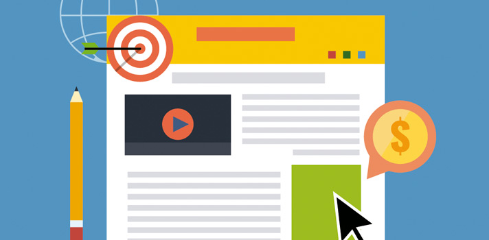
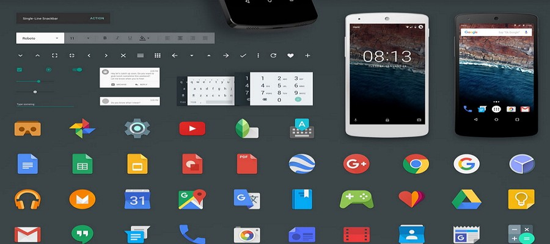

Creación de páginas web con HTML
¿Qué es la ergonomía en sitios web?
Ergonomía
Utilización del conocimiento científico que se tiene sobre los seres humanos (psicología; sensaci&oacye;n que provoca, fisiología; forma que tiene el objeto, medicina; riesgo del uso).
Tiene el proposito de mejorar el ámbito laboral.
- Eficacia: implementar soluciones.
- Utilidad: se tiene que adaptar.
- Comodidad durante el uso: reducir cansancio físico y mental.
- Seguridad: proteger al usuario.
Ergonomía en sitios web
Capacidad de responder a las necesidades de los usuarios de manera eficaz y proporcionar la comodidad mientras navegue.
Factores
El obstaculo más grande que la ergonomía intenta superar son los distintos tipos de perfiles de usuarios.
- Espectativas del usuario.
- Edad de los usuarios.
- Hábitos de los usuarios.
- Equipos
- Nivel deconocimiento.
Criterios para realizar una página web
Sobriedad
- Simplicidad
- Sin sobrecargar
Legibilidad
- Claridad.
- Estructuración.
- Organización.
Velocidad
- Tiempo de carga.
- Imágenes optimizadas.
- Imágenes sin cambio de tamaño.
Funcionalidad
- Fácil de manejar.
- Ubicación.
- Homogeneidad estructural.
- Visibilidad de la dirección.
- Materialización de la información.
Interactividad
- Hipervínculos.
- Segmentación de la informació.
- Facilitación de intercambios.
Accesibilidad
- Acceso para todos.
- Transparencia de formato.
- Leyenda.
- Elección de colores.
- Contraste adecuado.
- Tamaño adecuado.

GUI (Graphic User Interface)
Programa o entorno que gestiona la información con el usuario basándose en relaciones visuales como punteros, íconos y/o menús.
Técnicas aplicadas
WYSIWYG: What you see is what you get (lo que ves es lo que obtienes).
Describe ua interfaz gráfica en la que el usuario ve una representación muy similar al resultado final en lo que es creado.
WIMP: ventanas,íconos, menús y puntero. Estilo de interfaz para la realización hombre-maquina.
Fué desarrollada por Xerox y popularizada por Macintosh.
MANIPULACIÓN DIRECTA.
FOCUS.
